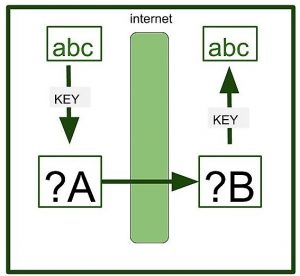
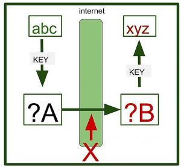
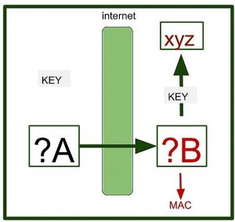

Message Authentication Codes are the codes which plays their role in two important functions : Authentication Detection and Falsification Detection.
Where do we need these codes ?
Suppose a User A send message to user B with message – ‘abc’. A encrypts the message using Shared – Key Cryptosystem for encrypting the message. A sends the key to B using a source key. Key exchange is based on different protocols such as Public – Key Cryptosytem. B uses the key to decrypt the Ciphertext and obatins the message.

All this does not happen so easily. There lies a problem.
If a malicious user X has falsified the ciphertext during the transmission. Then in that case, B has no way to realize that it has been falsified.When B decrypts the message, it will get the wrong message. Unknown to the fact B will think wrong information to be the right. Although you can decrypt or encrypt the data later on but these operations, you are applying on the wrong data.

Here we need to detect the falsification in the message B has got.
Here A will create a key (used to create Message Authentication Code) and sends the key to B. A will create a value using Ciphertext and key and the value is obtained. This value Created by Cipertext + Key = Message Authentication Code. B has to check whether the ciphertext is falsified or not using Message Authentication Code. Now B can clearly know that whether the ciphertext is falsified or not.
